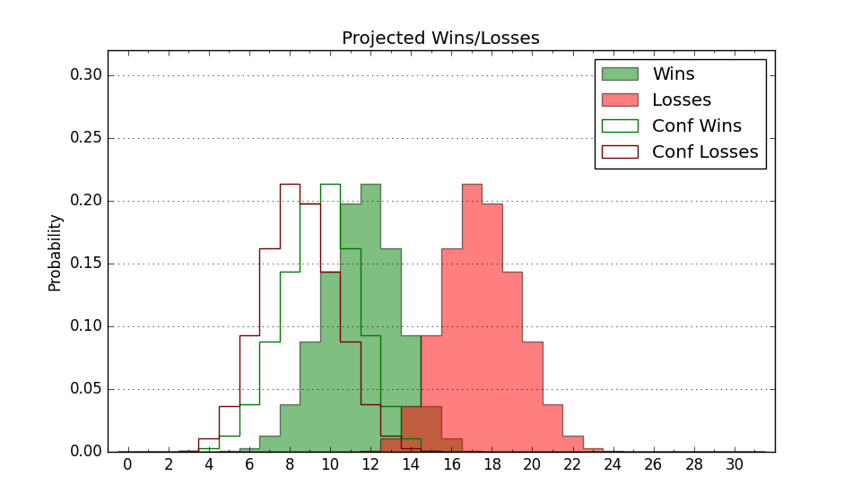

| Home | Game Probabilities | Conferences | Preseason Predictions | Odds Charts | NCAA Tournament |
| City: | Houston, Texas | |
| Conference: | Southwest (10th)
| |
| Record: | 0-3 (Conf) 2-12 (Overall) | |
| Ratings: | Comp.: -7.7 (256th) Net: -8.6 (268th) Off: 92.6 (319th) Def: 101.2 (180th) SoR: 0.0 (213th) |
| Remaining | ||||||
|---|---|---|---|---|---|---|
| Date | Opponent | Win Prob | Pred. | |||
| 1/9 | @ Mississippi Valley St. (360) | 79.0% | W 70-60 | |||
| 1/14 | Alcorn St. (284) | 69.5% | W 72-66 | |||
| 1/16 | Jackson St. (325) | 78.8% | W 75-65 | |||
| 1/21 | @ Alabama A&M (335) | 56.9% | W 71-69 | |||
| 1/23 | @ Alabama St. (350) | 64.2% | W 71-66 | |||
| 1/28 | Prairie View A&M (283) | 69.3% | W 71-65 | |||
| 2/4 | Florida A&M (358) | 90.8% | W 74-58 | |||
| 2/6 | Bethune Cookman (352) | 86.4% | W 76-63 | |||
| 2/11 | @ Grambling St. (225) | 28.1% | L 63-69 | |||
| 2/13 | @ Southern (215) | 26.8% | L 65-73 | |||
| 2/18 | Mississippi Valley St. (360) | 92.8% | W 74-56 | |||
| 2/20 | Arkansas Pine Bluff (342) | 83.5% | W 75-63 | |||
| 2/25 | @ Jackson St. (325) | 52.2% | W 70-69 | |||
| 2/27 | @ Alcorn St. (284) | 40.1% | L 68-71 | |||
| 3/4 | @ Prairie View A&M (283) | 39.9% | L 67-70 | |||
| Previous | Game Score | |||||
| Date | Opponent | Win Prob | Result | Off | Def | Net |
| 11/7 | @San Francisco (103) | 11.3% | L 77-90 | 2.7 | -7.1 | -4.4 |
| 11/10 | @Texas Tech (30) | 4.0% | L 54-78 | -6.2 | 9.0 | 2.8 |
| 11/13 | Arizona St. (66) | 19.7% | W 67-66 | 1.4 | 13.2 | 14.6 |
| 11/15 | Oral Roberts (67) | 19.9% | L 64-82 | -7.0 | -6.9 | -13.8 |
| 11/16 | @Houston (1) | 0.6% | L 48-83 | 6.6 | -7.5 | -0.9 |
| 11/18 | @Auburn (31) | 4.0% | L 56-72 | -1.8 | 15.8 | 14.0 |
| 11/20 | @Samford (158) | 18.2% | L 63-78 | 0.8 | -5.3 | -4.5 |
| 11/28 | @Kansas (4) | 1.5% | L 55-87 | 4.5 | -11.2 | -6.7 |
| 12/17 | (N) North Carolina A&T (269) | 52.2% | L 66-67 | -12.2 | 9.9 | -2.2 |
| 12/18 | (N) Hampton (353) | 78.8% | W 82-77 | 15.2 | -13.9 | 1.3 |
| 12/22 | @Wichita St. (107) | 11.8% | L 56-65 | 0.2 | 9.3 | 9.5 |
| 1/2 | Southern (215) | 55.5% | L 76-77 | 2.1 | -4.6 | -2.5 |
| 1/4 | Grambling St. (225) | 57.1% | L 72-85 | 6.6 | -24.7 | -18.1 |
| 1/7 | @Arkansas Pine Bluff (342) | 59.8% | L 66-70 | -16.4 | 7.7 | -8.7 |
| Stats & Trends | |||||
|---|---|---|---|---|---|
| Current | Day | Week | Month | Season | |
| Composite | -7.7 | -0.8 | -2.3 | -3.0 | -4.7 |
| Comp Rank | 256 | -16 | -25 | -36 | -64 |
| Net Efficiency | -8.6 | -0.9 | -2.5 | -2.9 | -- |
| Net Rank | 268 | -18 | -26 | -31 | -- |
| Off Efficiency | 92.6 | -1.7 | -0.9 | -2.8 | -- |
| Off Rank | 319 | -20 | -16 | -49 | -- |
| Def Efficiency | 101.2 | +0.8 | -1.6 | -0.2 | -- |
| Def Rank | 180 | +15 | -32 | -10 | -- |
| SoS Rank | 29 | -18 | -25 | -27 | -- |
| Exp. Wins | 11.5 | -0.8 | -2.5 | -2.8 | -3.9 |
| Exp. Conf Wins | 9.5 | -0.8 | -2.5 | -2.2 | -2.8 |
| Conf Champ Prob | 1.6 | -2.4 | -26.2 | -23.3 | -32.9 |

| Advanced Stats | ||
|---|---|---|
| Stat | Value | Rank |
| Off Eff FG % | 0.457 | 321 |
| Off Ast Ratio | 0.115 | 331 |
| Off ORB% | 0.256 | 215 |
| Off TO Rate | 0.152 | 121 |
| Off FT Ratio | 0.290 | 236 |
| Def Eff FG % | 0.514 | 224 |
| Def Ast Ratio | 0.146 | 232 |
| Def ORB% | 0.259 | 149 |
| Def TO Rate | 0.171 | 111 |
| Def FT Ratio | 0.343 | 265 |